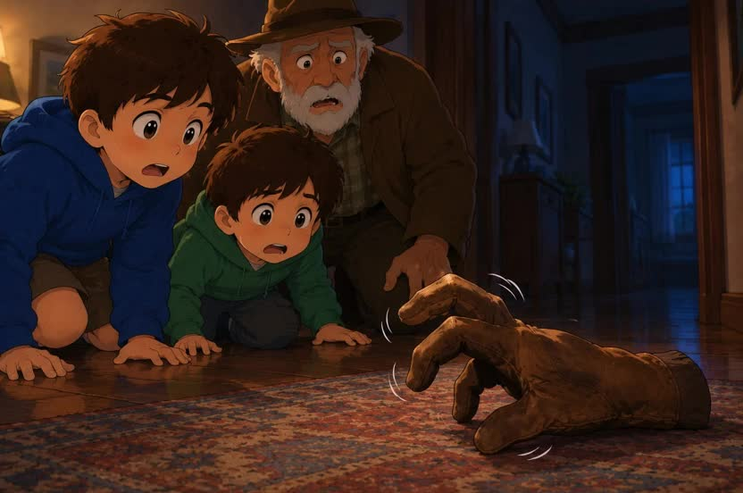

<!doctype html><html lang="es"><meta charset="utf-8"><meta name="viewport" content="width=device-width,initial-scale=1"><title>EL GUANTE · LA CASA DE LAS SORPRESAS</title><style>
:root{font-size:22px;color-scheme:dark}*{box-sizing:border-box}body{margin:0;background:#101b29;color:#fff6de;font-family:Arial,sans-serif;line-height:1.5}button{font:700 1rem Arial;min-height:64px;padding:16px 22px;border:2px solid #8bacc3;border-radius:16px;background:#20374b;color:white;cursor:pointer}button:hover{background:#36536b}button:focus-visible{outline:5px solid #ffd46b;outline-offset:4px}button:disabled{opacity:.6;cursor:default}.gold{background:#ffd46b;color:#152331;border-color:#ffd46b}.gold:hover{background:#ffe5a6}header{max-width:1200px;margin:auto;padding:16px;display:flex;gap:12px;align-items:center;flex-wrap:wrap}header strong{margin-right:auto}main{max-width:1100px;margin:auto;padding:16px 16px 60px}h1{font-size:clamp(1.8rem,5vw,3.2rem);line-height:1.1;margin:14px 0}h2{font-size:1.5rem}.eyebrow{color:#ffd46b;letter-spacing:2px;font-size:.8rem}.panel{background:#182b3d;padding:clamp(20px,4vw,40px);border:1px solid #557087;border-radius:24px;margin:16px 0}.hero{display:grid;grid-template-columns:1fr 1fr;gap:22px;align-items:center}.scene{width:100%;border-radius:18px;display:block}.choices{display:grid;grid-template-columns:repeat(3,1fr);gap:14px;margin:22px 0}.choices button{min-height:100px}.map{display:grid;grid-template-columns:repeat(3,1fr);gap:18px;margin:24px 0}.door{min-height:160px;text-align:left;background:linear-gradient(140deg,#25455a,#16293b)}.door b{display:block;color:#ffd46b;font-size:1.8rem}.muted{color:#c8d8e5}.row{display:flex;gap:12px;flex-wrap:wrap}.feedback{padding:16px;border-left:6px solid #ffd46b;background:#253e4e;min-height:64px}.tokens{font-size:1.4rem;letter-spacing:8px;color:#ffd46b}video{width:100%;max-height:65vh}.tapglove{font-size:5rem;width:100%;min-height:180px;transition:transform .2s}.jump{transform:rotate(12deg) scale(1.06)}progress{width:100%;height:20px;accent-color:#ffd46b}.small{font-size:.8rem}dialog{max-width:650px;width:90%;background:#20374b;color:white;border:2px solid #ffd46b;border-radius:24px;padding:30px}::backdrop{background:#000b}@media(max-width:650px){.hero{grid-template-columns:1fr}.map{grid-template-columns:1fr 1fr}.choices{grid-template-columns:1fr}button{width:100%}header button{width:auto;font-size:.8rem;padding:12px}.row button{flex:1}.door{font-size:.9rem}h1{font-size:2rem}}@media(prefers-reduced-motion:reduce){*{transition:none!important;animation:none!important}}
</style><header><strong>✋ EL GUANTE</strong><button id="size">A+ LETRA</button><button id="voice">VOZ: NO</button><button id="pause">PAUSA</button></header><main id="app"></main><dialog id="rest"><h2>HACEMOS UNA PAUSA</h2><p>PODÉS DESCANSAR. TU AVENTURA TE ESPERA.</p><button class="gold" onclick="document.querySelector('dialog').close()">VOLVER AL JUEGO</button></dialog><script>
const app=document.querySelector('#app');let voice=false,big=false,done=new Set(),current=0,step=0,taps=0,chosenEmotion='',ending='';
const missions=[['LA ENTRADA','RECORDÁ EL CUENTO',0],['LA SALA','BUSCÁ UNA PISTA',1],['EL PASILLO','DESCUBRÍ EL MISTERIO',2],['EL RINCÓN DEL GUANTE','DALE VIDA',2],['EL REFUGIO','ELEGÍ UNA EMOCIÓN',3],['LA ÚLTIMA PUERTA','INVENTÁ OTRO FINAL',4]];
const questions=[
[{q:'¿QUÉ OBJETO SE PERDIÓ?',o:['EL GUANTE','LA PELOTA','EL ZAPATO'],a:0},{q:'¿CON QUIÉNES VIVÍA DYLAN?',o:['CON UN PIRATA','CON SU HERMANO Y SU ABUELO','CON UN DRAGÓN'],a:1}],
[{q:'EL GUANTE NO APARECE. ¿QUÉ HACEN?',o:['BUSCAN','DUERMEN','COMEN'],a:0},{q:'ENCONTRÁ LA PISTA QUE ES UNA PRENDA.',o:['🗝️ LLAVE','✋ GUANTE','📦 CAJA'],a:1}],
[{q:'¿QUÉ HACE EL GUANTE EN EL CUENTO?',o:['SE MUEVE SOLO','PREPARA UNA TORTA','ANDA EN BICICLETA'],a:0},{q:'¿QUÉ SE OYE AL FINAL?',o:['UNA CAMPANA','TRES GOLPES','UN TELÉFONO'],a:1}]];

missions.push(['EL ÁLBUM','CONOCÉ A LOS PERSONAJES',0],['LA ESCALERA','ORDENÁ LA HISTORIA',1],['LA PUERTA MISTERIOSA','CONTÁ LAS PISTAS',4],['EL TALLER','ELEGÍ Y REPRESENTÁ',2],['LA HABITACIÓN','VERDADERO O FALSO',3],['EL COFRE','RECORDÁ Y DESCUBRÍ',2]);
questions.push([],[],[],
[{q:'¿CÓMO SE LLAMA EL NIÑO DEL CUENTO?',o:['DYLAN','PEDRO','JUAN'],a:0},{q:'¿QUÉ FAMILIAR MAYOR APARECE?',o:['LA TÍA','EL ABUELO','LA ABUELA'],a:1},{q:'¿QUIÉN ACOMPAÑA A DYLAN Y AL ABUELO?',o:['SU MAESTRA','UN VECINO','SU HERMANO'],a:2}],
[{q:'PRIMERO, DYLAN NO ENCUENTRA SU GUANTE. ¿QUÉ HACEN DESPUÉS?',o:['LO BUSCAN','VAN A LA ESCUELA','COMPRAN HELADO'],a:0},{q:'VEN QUE EL GUANTE SE MUEVE SOLO. ¿QUÉ HACEN LUEGO?',o:['SE DUERMEN','SALEN DE LA HABITACIÓN','COCINAN'],a:1},{q:'¿QUÉ ESCENA VA AL FINAL DEL VIDEO?',o:['LOS TRES GOLPES','LA PRESENTACIÓN DE DYLAN','LA BÚSQUEDA DEL GUANTE'],a:0}],
[{q:'¿CUÁNTOS GOLPES SE ESCUCHAN AL FINAL? TOC, TOC, TOC.',o:['UN GOLPE','DOS GOLPES','TRES GOLPES'],a:2},{q:'DYLAN, SU HERMANO Y SU ABUELO: ¿CUÁNTAS PERSONAS SON?',o:['TRES','UNA','DOS'],a:0},{q:'¿QUÉ PARTE DEL CUERPO CUBRE UN GUANTE?',o:['EL PIE','LA MANO','LA CABEZA'],a:1}],
[{q:'ELEGÍ CÓMO DARLE VIDA AL GUANTE.',o:['MOVER UNA MANO','MOVER UNA TARJETA','INDICARLE A ALGUIEN'],free:true},{q:'¿QUÉ MOVIMIENTO INVENTAMOS?',o:['UN SALUDO','UN BAILE','UN ESCONDITE'],free:true},{q:'¿CÓMO HACEMOS LA ESCENA?',o:['EN SILENCIO','CON UNA FRASE','CON UN SONIDO SUAVE'],free:true}],
[{q:'EN EL CUENTO APARECE UN GUANTE QUE SE MUEVE SOLO.',o:['VERDADERO','FALSO','NO SÉ'],a:0},{q:'DYLAN VIVE CON UN DRAGÓN.',o:['VERDADERO','FALSO','NO SÉ'],a:1},{q:'AL FINAL SE OYEN TRES GOLPES.',o:['VERDADERO','FALSO','NO SÉ'],a:0}],
[{q:'¿QUÉ OBJETO PERTENECE A ESTA HISTORIA?',o:['UNA CORONA','UN GUANTE','UNA ESPADA'],a:1},{q:'¿DÓNDE BUSCAN EL GUANTE?',o:['EN LA CASA','EN EL MAR','EN LA LUNA'],a:0},{q:'¿QUÉ TÍTULO ELEGIRÍAS PARA NUESTRA AVENTURA?',o:['EL GUANTE BAILARÍN','LA CASA MISTERIOSA','EL GUANTE AMIGO'],free:true}]);
questions[0].push(...[{"q": "¿QUÉ PROBLEMA TIENE DYLAN?", "o": ["NO ENCUENTRA SU GUANTE", "NO TIENE COMIDA", "SE PERDIÓ EN EL BOSQUE"], "a": 0}, {"q": "¿QUÉ PERSONAJE ES HERMANO DE DYLAN?", "o": ["EL ABUELO", "EL OTRO NIÑO", "EL GUANTE"], "a": 1}, {"q": "¿QUÉ OBJETO CAUSA LA SORPRESA?", "o": ["UNA SILLA", "UNA LÁMPARA", "EL GUANTE"], "a": 2}]);
questions[1].push(...[{"q": "¿QUÉ PODRÍA AYUDAR A BUSCAR UN OBJETO?", "o": ["MIRAR CON ATENCIÓN", "CERRAR LOS OJOS", "TAPARLO TODO"], "a": 0}, {"q": "¿QUÉ OBJETO PODRÍA GUARDARSE EN UNA CAJA?", "o": ["UN GUANTE", "UNA CASA", "UNA MONTAÑA"], "a": 0}, {"q": "SI NO ENCONTRÁS ALGO, ¿QUÉ PODÉS HACER?", "o": ["MIRAR SIN UNA PISTA", "PEDIR AYUDA", "BUSCAR EN OTRO MOMENTO"], "a": 1}]);
questions[2].push(...[{"q": "EN LA ESCENA DEL GUANTE, ¿QUÉ SORPRENDE A LOS PERSONAJES?", "o": ["EL GUANTE SE MUEVE", "EL ABUELO COCINA", "LA CASA VUELA"], "a": 0}, {"q": "TOC, TOC, TOC. ¿QUÉ PALABRA NOMBRA LO QUE OYEN?", "o": ["COLORES", "SABORES", "GOLPES"], "a": 2}, {"q": "SI ALGO TE ASUSTA, ¿QUÉ PODÉS PEDIR?", "o": ["COMPAÑÍA Y AYUDA", "SEGUIR SIN DECIR NADA", "ESCONDER LO QUE SENTÍS"], "a": 0}]);
questions[6].push(...[{"q": "¿QUIÉN ES EL PERSONAJE DE MAYOR EDAD?", "o": ["DYLAN", "EL ABUELO", "SU HERMANO"], "a": 1}, {"q": "¿QUIÉNES SON FAMILIA?", "o": ["DYLAN Y SU HERMANO", "EL GUANTE Y LA CAJA", "LA PUERTA Y EL PASILLO"], "a": 0}]);
questions[7].push(...[{"q": "¿QUÉ PASA ANTES DE SALIR DE LA HABITACIÓN?", "o": ["VEN AL GUANTE MOVERSE", "COMPRAN OTRO GUANTE", "VIAJAN EN AVIÓN"], "a": 0}, {"q": "¿QUÉ PARTE PRESENTA A DYLAN Y SU FAMILIA?", "o": ["EL FINAL", "EL PRINCIPIO", "LOS CRÉDITOS"], "a": 1}]);
questions[8].push(...[{"q": "DYLAN Y SU HERMANO: ¿CUÁNTOS NIÑOS SON?", "o": ["UNO", "DOS", "TRES"], "a": 1}, {"q": "SI HACEMOS UN GOLPE Y LUEGO OTRO, ¿CUÁNTOS SON?", "o": ["TRES", "UNO", "DOS"], "a": 2}, {"q": "¿QUÉ USAMOS PARA ESCUCHAR LOS GOLPES?", "o": ["LOS OÍDOS", "LOS PIES", "LA NARIZ"], "a": 0}]);
questions[9].push(...[{"q": "¿CÓMO QUERÉS PARTICIPAR EN LA PRÓXIMA ESCENA?", "o": ["ACTUAR", "SEÑALAR", "MIRAR"], "free": true}, {"q": "¿QUÉ MENSAJE LE DARÍAS AL GUANTE?", "o": ["HOLA, GUANTE", "¿QUERÉS JUGAR?", "VAMOS A DESCANSAR"], "free": true}, {"q": "¿DÓNDE ESCONDERÍAS EL GUANTE EN TU FINAL?", "o": ["EN UNA CAJA", "DEBAJO DE UNA TELA", "DETRÁS DE UN LIBRO"], "free": true}]);
questions[10].push(...[{"q": "EL ABUELO APARECE EN EL CUENTO.", "o": ["VERDADERO", "FALSO", "NO SÉ"], "a": 0}, {"q": "LOS PERSONAJES BUSCAN UNA PELOTA.", "o": ["VERDADERO", "FALSO", "NO SÉ"], "a": 1}]);
questions[11].push(...[{"q": "¿QUÉ LE PREGUNTARÍAS AL GUANTE?", "o": ["¿CÓMO TE MOVÉS?", "¿QUERÉS UN AMIGO?", "¿DÓNDE TE ESCONDISTE?"], "free": true}, {"q": "¿QUÉ AVENTURA INVENTARÍAS DESPUÉS?", "o": ["BUSCAR OTRO GUANTE", "PREPARAR UNA FIESTA", "EXPLORAR OTRA HABITACIÓN"], "free": true}, {"q": "¿CON QUIÉN QUERÉS COMPARTIR TU FINAL?", "o": ["CON EL GRUPO", "CON UNA PERSONA", "PREFIERO GUARDARLO"], "free": true}]);
const totalQuestions=questions.reduce((n,qs)=>n+qs.length,0);
const total=missions.length;

function say(t){if(voice&&'speechSynthesis'in window){speechSynthesis.cancel();let u=new SpeechSynthesisUtterance(t);u.lang='es-AR';u.rate=.85;speechSynthesis.speak(u)}}
function render(html,text){app.innerHTML=html;if(text)say(text)}
function home(){render(`<section class="panel hero"><div><div class="eyebrow">UNA AVENTURA PARA JUGAR JUNTOS</div><h1>LA CASA DE LAS SORPRESAS</h1><p class="eyebrow">12 MISIONES · ${totalQuestions} PREGUNTAS Y ELECCIONES</p><p>UN GUANTE SE MUEVE SOLO…<br>¿NOS AYUDÁS A DESCUBRIR SU HISTORIA?</p><button class="gold" onclick="map()">JUGAR</button></div></section><div class="row"><button onclick="watch()">▶ VER EL CUENTO</button><button onclick="help()">¿CÓMO JUGAMOS?</button></div><p class="muted small">SIN RELOJ. SIN ELIMINACIONES. PODÉS RESPONDER CON LA VOZ, LA MIRADA, UN GESTO O TOCANDO.</p>`)}
function watch(){render(`<button onclick="home()">← VOLVER</button><h1>EL GUANTE</h1><video controls playsinline src="cuento.mp4"></video><p>CUANDO TERMINES, ENTRÁ A LA CASA.</p><button class="gold" onclick="map()">JUGAR</button>`)}
function help(){render(`<h1>ASÍ JUGAMOS</h1><div class="panel"><p>1. MIRAMOS EL CUENTO.</p><p>2. ABRIMOS LAS DOCE PUERTAS EN EL ORDEN QUE QUERAMOS.</p><p>3. CONSEGUIMOS UNA ESTRELLA EN CADA MISIÓN.</p><p>4. INVENTAMOS UN FINAL ENTRE TODOS.</p><p>SE PUEDE JUGAR DESDE EL PROPIO LUGAR. OTRA PERSONA PUEDE TOCAR LA OPCIÓN QUE ELIJAS.</p></div><button class="gold" onclick="home()">ENTENDIDO</button>`)}
function map(){if(done.size===total)return finish();render(`<div class="eyebrow">EXPLORÁ LA CASA</div><h1>¿QUÉ PUERTA ABRIMOS?</h1><p>REUNÍ LAS 12 ESTRELLAS. ELEGÍ UNA PUERTA.</p><progress value="${done.size}" max="${total}" aria-label="Misiones completadas"></progress><p>${done.size} DE ${total} MISIONES COMPLETADAS</p><div class="map">${missions.map((m,i)=>`<button class="door" onclick="enter(${i})"><b>${done.has(i)?'★':'☆'} ${i+1}</b>${m[0]}<br><span class="small">${done.has(i)?'MISIÓN COMPLETADA':m[1]}</span></button>`).join('')}</div><button onclick="watch()">▶ VOLVER A VER EL CUENTO</button>`)}
function enter(i){current=i;step=0;taps=0;run()}
function run(){let m=missions[current];let body='';if((current<3||current>=6)){let q=questions[current][step];body=`<p class="eyebrow">DESAFÍO ${step+1} DE ${questions[current].length}</p><h2>${q.q}</h2><div class="choices">${q.o.map((o,i)=>`<button onclick="answer(${i})">${o}</button>`).join('')}</div><div class="feedback" id="feedback" role="status">ELEGÍ UNA OPCIÓN.</div>`}else if(current===3){body=`<h2>¡HACÉ BAILAR AL GUANTE!</h2><p>TOCALO 3 VECES. TAMBIÉN PODÉS MOVER TU MANO, UNA TARJETA O ELEGIR QUIÉN LO HACE.</p><button class="tapglove" id="glove" aria-label="Mover el guante" onclick="dance()">✋</button><p id="count" role="status">0 DE 3 MOVIMIENTOS</p><button onclick="complete()">LO REPRESENTAMOS EN GRUPO ✓</button>`}else if(current===4){body=`<h2>¿CÓMO TE SENTIRÍAS SI EL GUANTE SE MOVIERA?</h2><p>CADA PERSONA PUEDE ELEGIR ALGO DIFERENTE.</p><div class="choices">${['MIEDO','SORPRESA','ALEGRÍA','TRISTEZA','OTRA EMOCIÓN','NO SÉ'].map(x=>`<button onclick="emotion('${x}')">${x}</button>`).join('')}</div><div id="feedback" role="status"></div>`}else{body=`<h2>VOS DECIDÍS: ¿QUÉ HARÁ EL GUANTE?</h2><div class="choices">${['SALUDAR','BAILAR','ESCONDERSE'].map(x=>`<button onclick="finalChoice('${x}')">${x}</button>`).join('')}</div><div id="feedback" role="status"></div>`}
render(`<div class="row"><button onclick="map()">← LA CASA</button><button onclick="hint()">AYUDA</button></div><section class="panel"><div class="eyebrow">MISIÓN ${current+1} / ${total}</div><h1>${m[0]}</h1>${body}</section>`,(current<3||current>=6)?questions[current][step].q:current===3?'Hacé bailar al guante':current===4?'¿Cómo te sentirías?':'Elegí otro final')}
function answer(i){let q=questions[current][step],f=document.querySelector('#feedback');if(!q.free&&i!==q.a){f.textContent='VOLVÉ A MIRAR LA ESCENA. PODÉS PROBAR OTRA VEZ.';say(f.textContent);return}document.querySelectorAll('.choices button').forEach(b=>b.disabled=true);f.innerHTML=`${q.free?'¡ELEGISTE '+q.o[i]+'! PODÉS REPRESENTAR TU IDEA.':'¡PISTA DESCUBIERTA!'} <button class="gold" onclick="next()">CONTINUAR →</button>`;say(q.free?'Elegiste '+q.o[i]:'Pista descubierta')}
function next(){if(++step<questions[current].length)run();else complete()}
function dance(){taps++;document.querySelector('#count').textContent=taps+' DE 3 MOVIMIENTOS';let g=document.querySelector('#glove');g.classList.toggle('jump');if(taps>=3){g.disabled=true;document.querySelector('#count').innerHTML='¡EL GUANTE BAILÓ! <button class="gold" onclick="complete()">CONSEGUIR ESTRELLA ★</button>'}}
function emotion(x){chosenEmotion=x;document.querySelector('#feedback').innerHTML=`ELEGISTE: ${x}. PODÉS CONTARLO O MOSTRARLO CON UN GESTO.<br><button class="gold" onclick="complete()">CONTINUAR ★</button>`;say('Elegiste '+x)}
function finalChoice(x){ending=x;document.querySelector('#feedback').innerHTML=`AL FINAL, EL GUANTE DECIDIÓ ${x}.<p>REPRESENTEN SU FINAL COMO PREFIERAN.</p><button class="gold" onclick="complete()">GUARDAR NUESTRO FINAL ★</button>`;say('Al final el guante decidió '+x)}
function complete(){done.add(current);render(`<section class="panel"><div class="tokens">★</div><h1>¡UNA ESTRELLA MÁS!</h1><p>COMPLETAMOS ${done.size} DE ${total} MISIONES.</p><p>PODEMOS CELEBRAR CON UN GESTO, UNA SONRISA O UN APLAUSO SUAVE.</p><button class="gold" onclick="map()">${done.size===total?'ABRIR EL FINAL':'SEGUIR EXPLORANDO'}</button></section>`,'Una estrella más')}
function finish(){render(`<section class="panel"><div class="tokens">★★★★★★★★★★★★</div><h1>¡MISTERIO RESUELTO!</h1><p>RECORDAMOS EL CUENTO, MOVIMOS EL GUANTE Y ELEGIMOS CÓMO SENTIRNOS.</p><h2>NUESTRO FINAL</h2><p>AL FINAL, EL GUANTE DECIDIÓ ${ending}.</p><p>¿QUIÉN QUIERE REPRESENTARLO?</p><div class="row"><button class="gold" onclick="done.clear();home()">JUGAR OTRA VEZ</button><button onclick="watch()">VER EL CUENTO</button></div></section>`,'Misterio resuelto. Al final el guante decidió '+ending)}
function hint(){let t=current<3?['MIRÁ QUÉ PRENDA BUSCAN LOS PERSONAJES.','BUSCAN ALGO QUE SE USA EN LA MANO.','OBSERVÁ EL GUANTE Y RECORDÁ LOS GOLPES DEL FINAL.'][current]:'PODÉS SEÑALAR, MIRAR UNA OPCIÓN O PEDIRLE A OTRA PERSONA QUE TOQUE POR VOS.';document.querySelector('#rest').innerHTML=`<h2>UNA AYUDA</h2><p>${t}</p><button class="gold" onclick="document.querySelector('dialog').close()">SEGUIR</button>`;document.querySelector('#rest').showModal();say(t)}
document.querySelector('#voice').onclick=()=>{voice=!voice;document.querySelector('#voice').textContent='VOZ: '+(voice?'SÍ':'NO');if(voice)say('Voz activada');else if('speechSynthesis'in window)speechSynthesis.cancel()};document.querySelector('#size').onclick=()=>{big=!big;document.documentElement.style.fontSize=big?'28px':'22px';document.querySelector('#size').textContent=big?'A− LETRA':'A+ LETRA'};document.querySelector('#pause').onclick=()=>{if('speechSynthesis'in window)speechSynthesis.cancel();document.querySelectorAll('video').forEach(v=>v.pause());document.querySelector('#rest').innerHTML='<h2>HACEMOS UNA PAUSA</h2><p>TU AVENTURA TE ESPERA.</p><button class="gold" onclick="document.querySelector(\'dialog\').close()">VOLVER AL JUEGO</button>';document.querySelector('#rest').showModal()};home();
</script></html>
